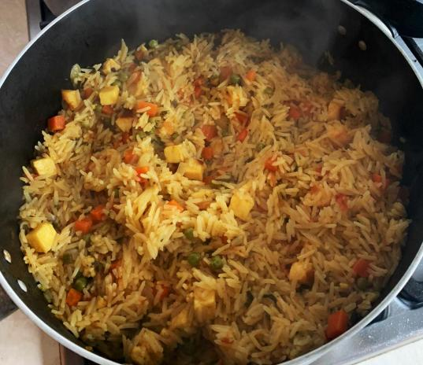
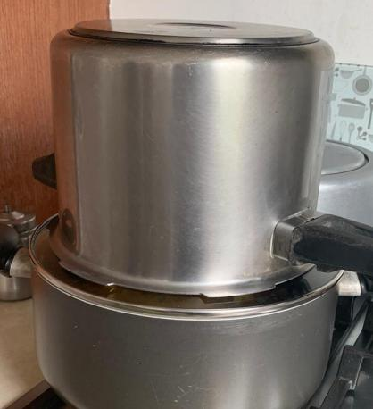

Veg Biryani (Roy's version)


Description
Biryani is a rice dish (sometimes described as an emotion) that contains indian spices, vegetables, rice, and usually some type of meat.
This is a very descriptive recipe for a delicious, veggie biryani adapted from the original meat versions by a friend. Serves 2-3 adults.
Ingredients
- Cooking oil – 80ml
- Cinnamon – a small piece (2cm)
- Cardamom – 3 pods
- Bay Leaf – 1
- Cloves – 3
- Ginger Garlic paste – ½ Tablespoon (Ground 1:1 ratio)
- Mixed Vegetables – Carrots, Potatoes, Beans, Peas, Paneer, Halloumi, Tofu, Soy Chunks, Mushrooms. Any
combination, amounting to 250 Grams
- Turmeric – ½ teaspoon
- Mint juice – 2 Tablespoon (Handful of Mint leaves blended with 1 Tablespoon
water. Optional)
- Chopped Onions – 2 small (or 1 large)
- Tomatoes – 2
- Green Chillies - 2
- Mint leaves – Finely Chopped - Handful
- Coriander Leaves - Finely Chopped - Handful
- Red Chilli Powder – 1 Teaspoon
- Biriyani Masala (spice mix) powder – 1 teaspoon (Optional)
- Salt – 2 Teaspoons
- Yoghurt – 2 Tablespoons
- Water – 500ml
- Lime – ¼ slice
- Basmati Rice – 1½ cups (Approx. 300ml)
Steps
- Rinse Basmati rise and soak in cold water for 20 Minutes. Best to do it a few minutes before turning stove on
- Set a pan to medium heat. Add 80ml of Cooking oil. Give it a minute to heat up
- Add the cinnamon, cardamom, bay leaf, cloves and star anise.
- Almost immediately add 1/2 tablespoon of Ginger garlic paste.
- Keep stirring until the Ginger garlic paste turns golden brown (Approximately 1 Minute or less)
- Add all the items selected for Mixed Vegetables and stir for a minute.
- Add ½ teaspoon Turmeric powder. Add 2 Table spoon of Mint leaves juice
- Add Chopped Onions (2), Tomatoes (2), Green Chillies (2), Finely chopped Mint leaves, Finely Chopped Coriander Leaves
- Add 1 Teaspoon of Chilli Powder, 1 Teaspoon Biriyani Masala (Optional) and 2 teaspoons Salt
- Mix them all together. Add 2 Tablespoon heap full of Plain natural Yoghurt and Mix again.
- Place a lid on and leave to cook for 10 Minutes. Open at the end of 12 Minutes and stir once to make sure the food doesn’t stick to the bottom. Cook with the lid for another 2 Minutes.
- After 12 minutes, add 500ml of Water and squeeze 1/4th of a lime (approx. 1 Tablespoon)
- This is an ideal step to test and make corrections if need be. All tastes should be 1.5x the expected, so it gets to normal when rice is added.
- Close the lid and leave until the water starts to boil (approximately 3 Minutes)
- Simmer the stove to lowest minimum, and add the soaked 1 and half cups basmati rice
- Mix well. Close the lid and place a weight on top. Set alarm to 18 Minutes
